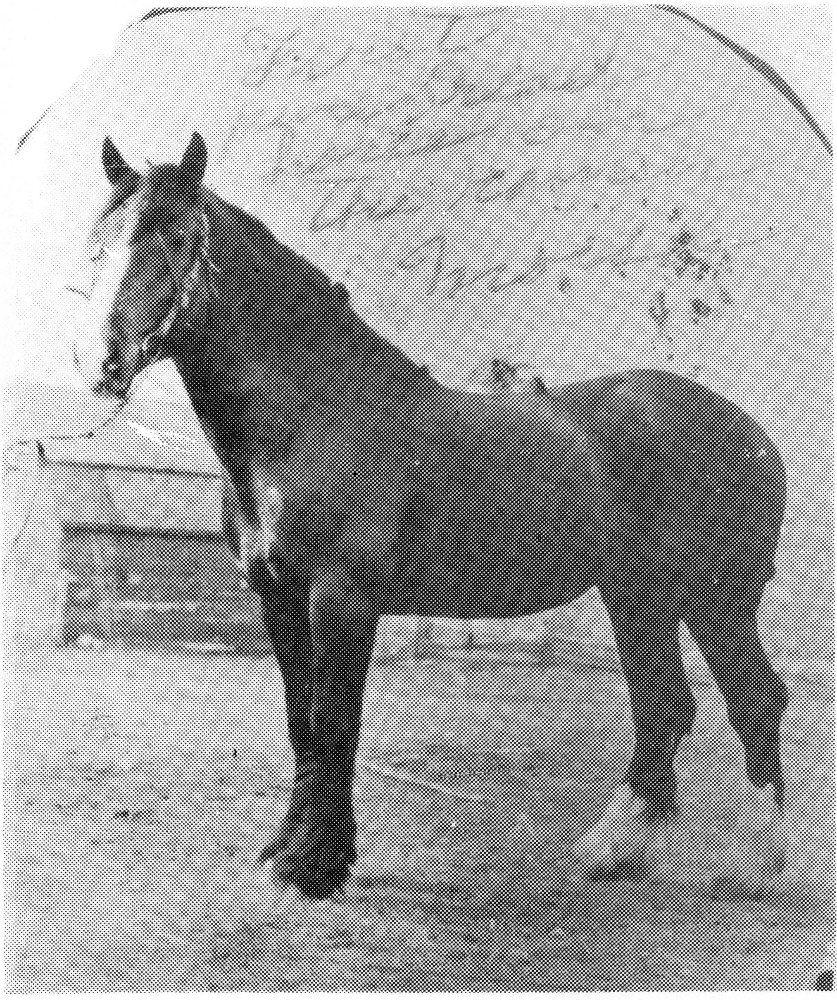
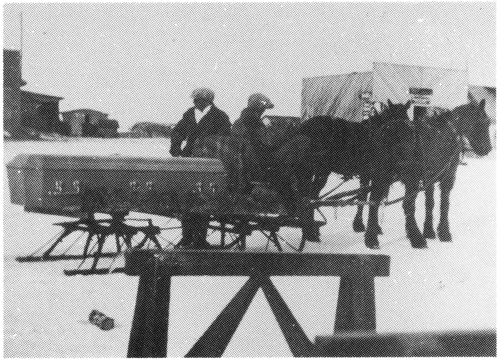
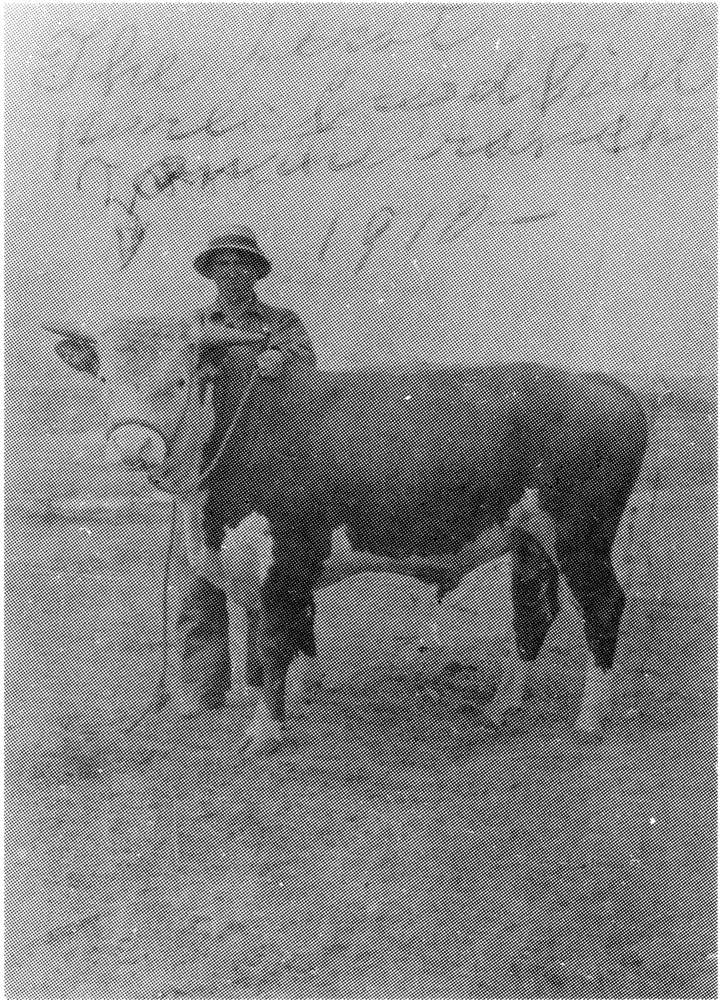
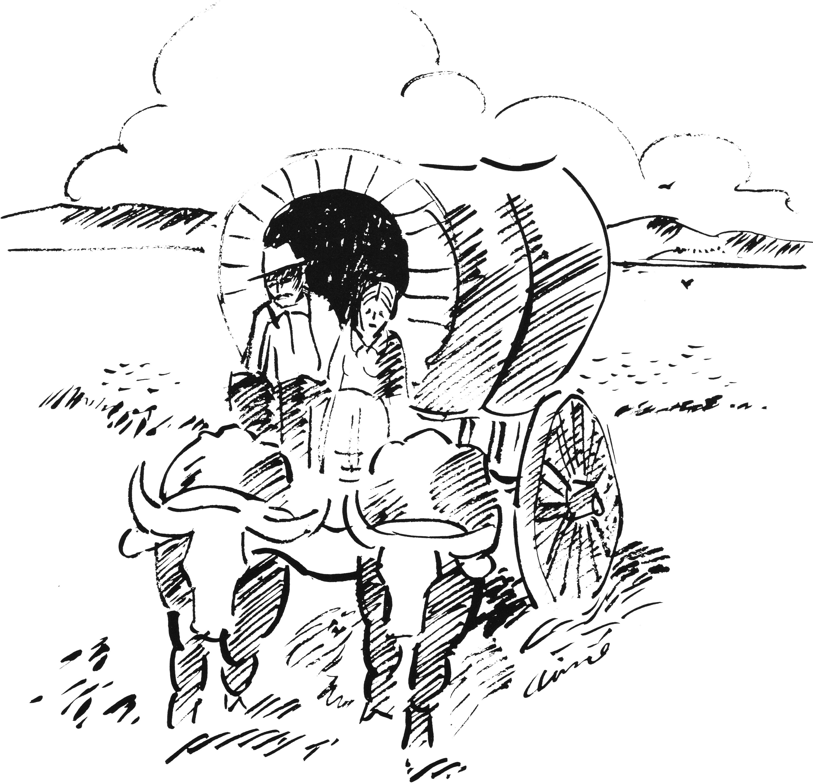
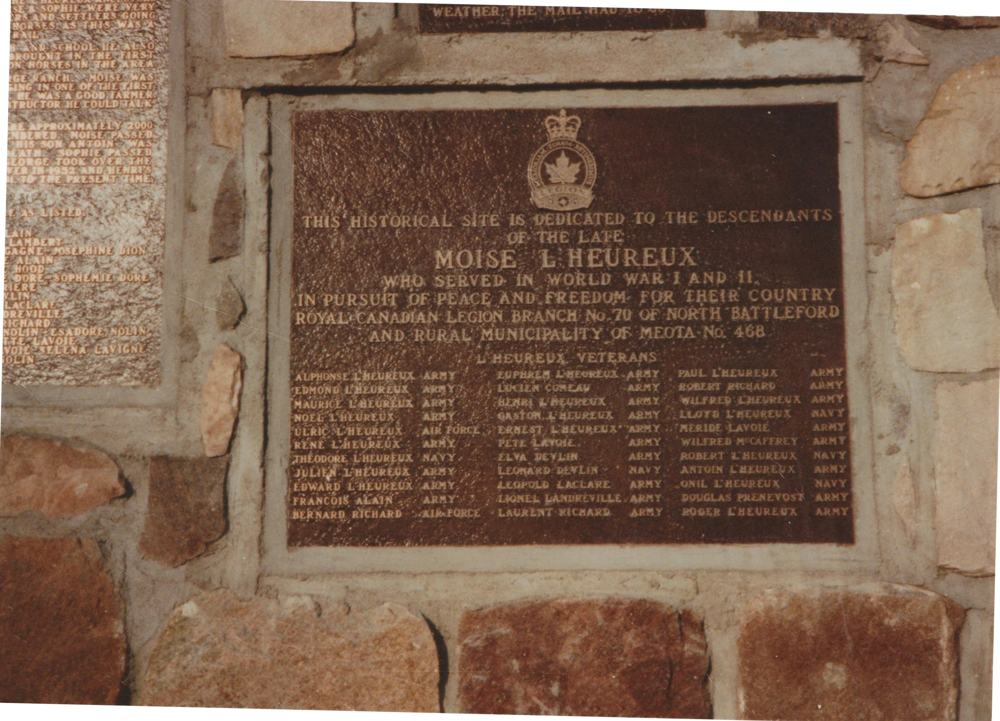
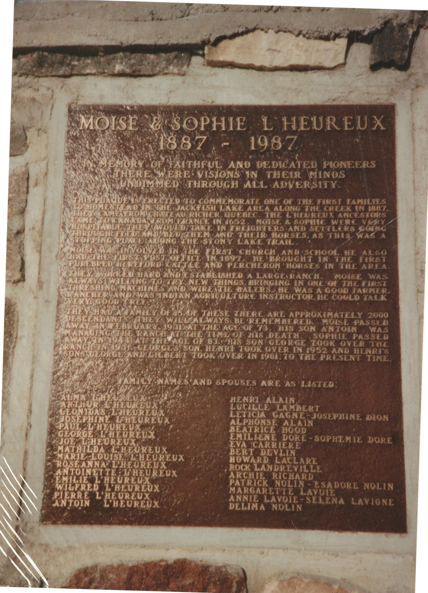
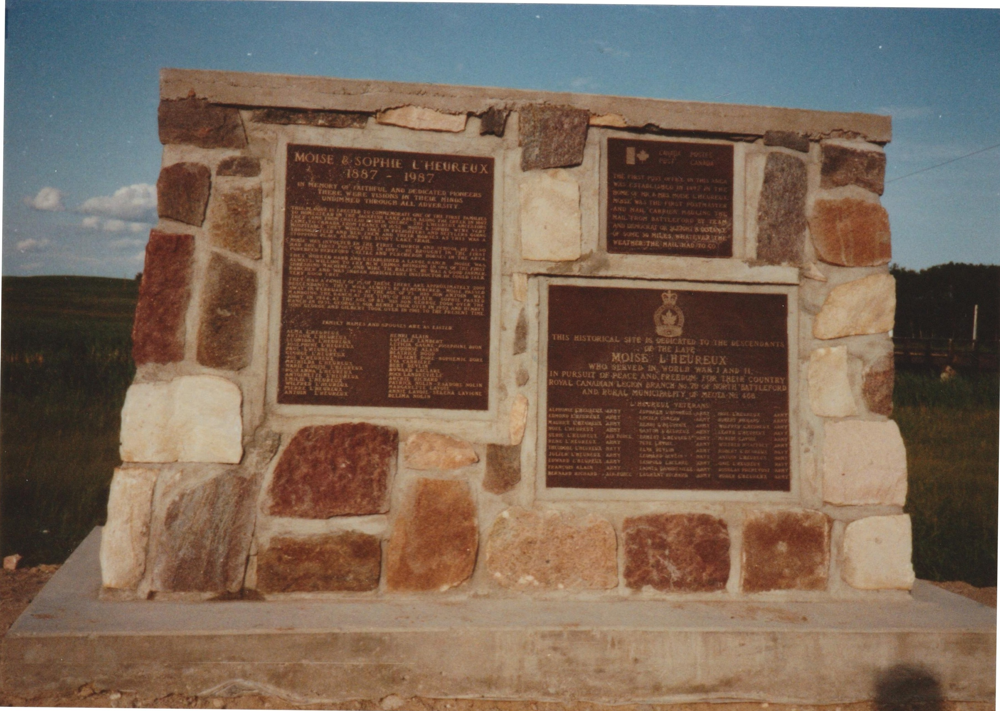
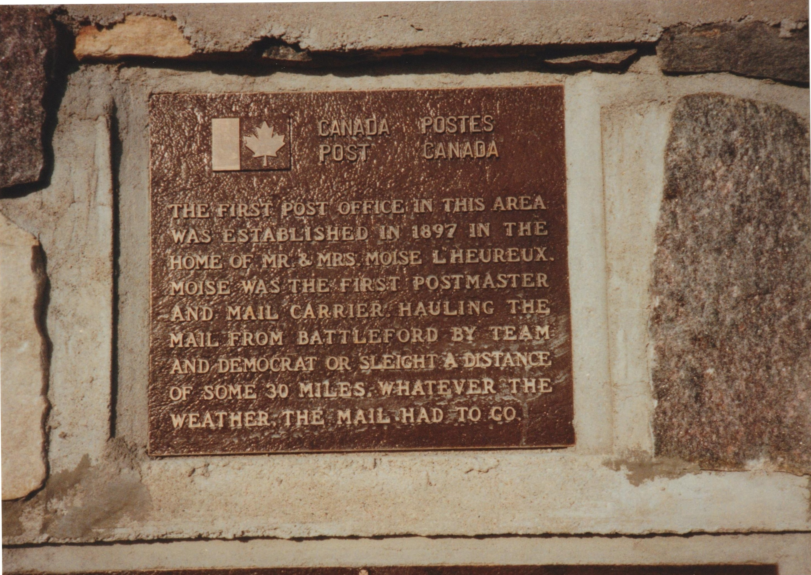

I WISH
I wish that every child could know
the rural charm...
which casts its spell on all who spend
a summer on the farm.
I wish that every city kid could see
the lovely dawn...
with pasture grass asparkle 'till the
morning dew is gone.
And then behold the brilliant blooms
of flowers growing wild...
A gift the Lord had sent to show His
love for every child.
I wish that kids from city streets
could play in stacks of hay...
and feed the cows and chickens and
could find their way...
to brooks and streams that trickle through
the splendor of the woods.
And know that Mother Nature owns
far more than worldly goods.
I wish the kids who play in the streets
could see the wondrous sight...
of summer as she slowly fades from gold
to gray of night...
and hear the soothing melody that
sighs through friendly trees...
to bring to man and bird and beast
a blessing on the breeze.
For youngsters would be better off if
they could know the charm...
which casts its spell on all who
spend a summer on the farm.
Author Unknown








Aime L'Heureux


THIS HISTORICAL SITE IS DEDICATED TO THE DESCENDANTS
OF THE LATE
MOISE L'HEUREUX
WHO SERVED IN WORLD WAR I AND II,
IN PURSUIT OF PEACE AND FREEDOM FOR THEIR COUNTRY
ROYAL CANADIAN LEGION BRANCH No. 70 OF NORTH BATTLEFORD
AND RURAL MUNICIPALITY OF MEOTA No. 468
L'HEUREUX VETERANS
| ALPHONSE L'HEUREUX | ARMY | EUPHREM L'HEUREUX | ARMY | PAUL L'HEUREUX | ARMY |
| EDMOND L'HEUREUX | ARMY | LUCIEN COMEAU | ARMY | ROBERT RICHARD | ARMY |
| MAURICE L'HEUREUX | ARMY | HENRI L'HEUREUX | ARMY | WILFRED L'HEUREUX | ARMY |
| NOEL L'HEUREUX | ARMY | GASTON L'HEUREUX | ARMY | LLOYD L'HEUREUX | NAVY |
| ULRIC L'HEUREUX | AIR FORCE | ERNEST L'HEUREUX | ARMY | MERIDE LAVOIE | ARMY |
| RENE L'HEUREUX | ARMY | PETE LAVOIE | ARMY | WILFRED MCCAFFREY | ARMY |
| THEODORE L'HEUREUX | NAVY | ELVA DEVLIN | ARMY | ROBERT L'HEUREUX | NAVY |
| JULIEN L'HEUREUX | ARMY | LEONARD DEVLIN | NAVY | ANTOIN L'HEUREUX | ARMY |
| EDWARD L'HEUREUX | ARMY | LEOPOLD LACLARE | ARMY | ONIL L'HEUREUX | NAVY |
| FRANCOIS ALAIN | ARMY | LIONEL LANDREVILLE | ARMY | DOUGLAS PRENEVOST | ARMY |
| BERNARD RICHARD | AIR FORCE | LAURENT RICHARD | ARMY | ROGER L'HEUREUX | ARMY |
MOISE & SOPHIE L'HEUREUX
1887 - 1987
IN MEMORY OF FAITHFUL AND DEDICATED PIONEERS
THERE WERE VISIONS IN THEIR MINDS
UNDIMMED THROUGH ALL ADVERSITY.
THIS PLAQUE IS ERECTED TO COMMEMORATE ONE OF THE FIRST FAMILIES
TO HOMESTEAD IN THE JACKFISH LAKE AREA ALONG THE CREEK IN 1887.
THEY CAME FROM CHATEAU RICHER, QUEBEC. THE L'HEUREUX ANCESTORS
CAME TO CANADA FROM FRANCE IN 1652. MOISE & SOPHIE WERE VERY
HOSPITABLE. THEY WOULD TAKE IN FREIGHTERS AND SETTLERS GOING
THROUGH, FEED AND SHELTER THEM AND THEIR HORSES, AS THIS WAS A
STOPPING PLACE ALONG THE STONY LAKE TRAIL.
MOISE WAS INVOLVED IN THE FIRST CHURCH AND SCHOOL. HE ALSO
BROUGHT IN THE FIRST POST OFFICE IN 1897. HE BROUGHT IN THE FIRST
PUREBRED HEREFORD CATTLE AND PERCHERON HORSES IN THE AREA.
THEY WORKED HARD AND ESTABLISHED A LARGE RANCH. MOISE WAS
NEVER UNWILLING TO TRY NEW THINGS, BRINGING IN ONE OF THE FIRST
THRESHING MACHINES AND WIRE TIE BALERS. HE WAS A GOOD FARMER,
RANCHER AND WAS INDIAN AGRICULTURE INSTRUCTOR. HE COULD TALK
VERY GOOD CREE.
THEY HAD A FAMILY OF 15. OF THESE THERE ARE APPROXIMATELY 2000
DESCENDANTS. THEY WILL ALWAYS BE REMEMBERED. MOISE PASSED
AWAY IN FEBRUARY 1931 AT THE AGE OF 73. HIS SON ANTOIN WAS
MANAGING THE RANCH AT THE TIME OF HIS DEATH. SOPHIE PASSED
AWAY IN 1948 AT THE AGE OF 83. HIS SON GEORGE TOOK OVER THE
RANCH IN 1931. GEORGE'S SON HENRI TOOK OVER IN 1952 AND HENRI'S
SONS GEORGE AND GILBERT TOOK OVER IN 1981 TO THE PRESENT TIME.
FAMILY NAMES AND SPOUSES ARE AS LISTED:
| ALMA L'HEUREUX | HENRI ALAIN |
| ARTHUR L'HEUREUX | LUCILLE LAMBERT |
| LEONIDAS L'HEUREUX | LETICIA GAGNE - JOSEPHINE DION |
| JOSEPHINE L'HEUREUX | ALPHONSE ALAIN |
| PAUL L'HEUREUX | BEATRICE HOOD |
| GEORGE L'HEUREUX | EMILIENE DORE - SOPHEMIE DORE |
| JOE L'HEUREUX | EVA CARRIERE |
| MATHILDA L'HEUREUX | BERT DEVLIN |
| MARIE-LOUISE L'HEUREUX | HOWARD LACLARE |
| ROSEANNA L'HEUREUX | ROCK LANDREVILLE |
| ANTOINETTE L'HEUREUX | ARCHIE RICHARD |
| EMILIE L'HEUREUX | PATRICK NOLIN - ESADORE NOLIN |
| WILFRED L'HEUREUX | MARGARETTE LAVOIE |
| PIERRE L'HEUREUX | ANNIE LAVOIE - SELENA LAVIGNE |
| ANTOIN L'HEUREUX | DELIMA NOLIN |


CANADA POSTES
POST CANADA
THE FIRST POST OFFICE IN THIS AREA
WAS ESTABLISHED IN 1897 IN THE
HOME OF MR. & MRS. MOISE L'HEUREUX.
MOISE WAS THE FIRST POSTMASTER
AND MAIL CARRIER, HAULING THE
MAIL FROM BATTLEFORD BY TEAM
AND DEMOCRAT OR SLEIGHT A DISTANCE
OF SOME 30 MILES. WHATEVER THE
WEATHER, THE MAIL HAD TO GO.